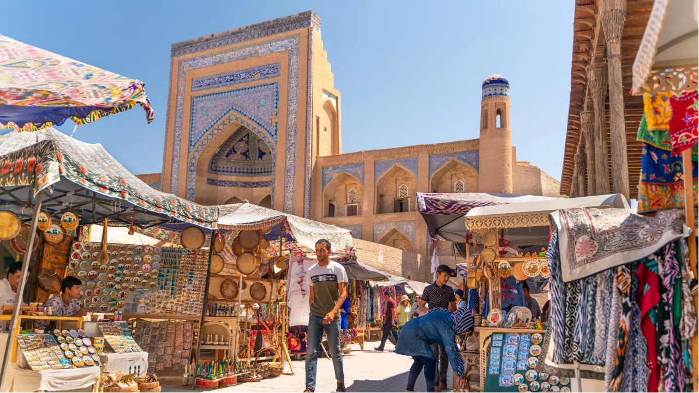
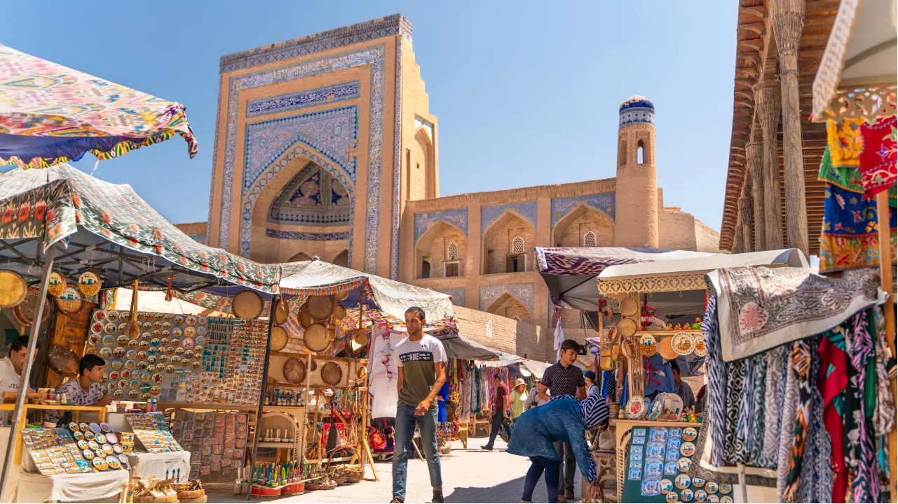

.jpg)
Города, жемчужины Востока.
Маршрут: Ташкент, Самарканд, Бухара. Продолжительность: 6 дней 5 ночей.
За эти дни вы увидите всю красоту и изящность этих городов. Древнейшие соперницы Самарканд и Бухара будет завораживать ваш взор, современный мегаполис Ташкент удивит вас современными и советскими архитектурами. А вкусная и разнообразная узбекская кухня запомнится на долго. Добро пожаловать в Узбекистан!
Программа тура.
Прибытие в Ташкент 20 марта
( например: Алматы- Ташкент 12:05- 12:45 Узбекистон Хаво Йуллари)
1- День 20.03
Ташкент13:30 Встреча и трансфер в отель Размещение в отеле. 15:00 Встреча с гидом в холле отеля.
Экскурсия по Ташкенту: старый город, архитектурно- культовый комплекс Хаст- Имам( Хазрат Имам), с грандиозной пятничной мечетью, средневековым мавзалеем Каффаль Шаши, медресе Баракхана, Исламский университет и библиотека в мечети Тилля- шейха. Вечерний Ташкент сити. 18:00 Ужин
2- День 21.03
Ташкент. Переезд в СамаркандЗавтрак в отеле. 9:00 Встреча с гидом в холле отеля Продолжение экскурсии по Ташкенту: Восточный базар Чорсу; Медресе Кукельдаш; площадь « Дружба народов», медресе Абдулкосима, памятник Алишеру Навои; площадь Амира Темура;
12:00-13:30 Обед
Продолжение экскурсии: Монумент «Мужество»; площадь Мустакиллик ( Независимости) с монументом Независимости; театр оперы и балета им. Алишера Навои.
18:30 Трансфер в вокзал
Переезд Ташкент -Самарканд 19:20 - 21:33
Встреча с вокзала и трансфер в отель. Размещение в отель.
3-День 22.03
Самарканд
Завтрак в отеле.
Экскурсия по Самарканду: «Сердце» Самарканда - площадь Регистана с 3-мя знаменитыми медресе: Щердор, Улугбек и Тилля- Кори, грандиозная соборная мечеть Биби- Ханум, великолепный мавзалей Гур-Эмир в котором захоронен Тамерлан , его сыновья и внук Улугбек.
12:00-13:30 Обед в Самарканде "Ош Маркази"
14:00 Продолжение экскурсии по Самарканду: Обсерватория Улугбека, некрополь Шахи Зинда, экзотический Сиабский базар, шелковая-ковровая фабрика , бумажная фабрика Конигил
18:00 Ужин Возвращение в отель
4- День 23.03
Самарканд. Бухара7:00 -8:30 Завтрак в отеле 9:30 Трансфер в вокзал. Переезд в Бухару Самарканд- Бухара 10:46-12:29 13:00 Встреча с вокзала и трансфер в отель Размещение в отель
Обед
15:00 Встреча с гидом на холле отеля. Экскурсия по Бухаре: комплекс Ляби Хауз-"сердце"старой Бухары; медресе Нодир Диванбеги; медресе Кукельдаш с бронзовой скульптурой мудреца Ходжа Насриддина на ослике; комплекс Пои-Калян, включает медресе Мири-Араб, мечеть Калян и минарет Калян высотой 46,5 метров; торговые купола Бухары.
19:00 Ужин Возвращение в отель.
5- День 24.03
Бухара. Ташкент7:00-8:30 Завтрак в отеле 9:00 Встреча с гидом в холле отеля Продолжение экскурсии по Бухаре: Цитадель Арк- самое древнее сооружение города; Мавзалей Саманидов -усыпальница правителей Бухары; Мавзолей саркофаг Чашма Аюб; медресе Чор-Минор-комплекс с четырьмя минаретами; Ситора-и- Мохи Хоса-летняя загородная резиденция последнего эмира Бухары и мемориальный комплекс Бахоуддина Накшбанди.
12:00-13:30 Обед Возвращение в отель
15:30 Трансфер в вокзал Переезд в Ташкент поезд Бухара-Ташкент 16;23-22:50 Встреча с вокзала и трансфер в отель Размещение в отеле
6-День 25.03
Ташкент7:00-8:30 Завтрак в отеле Самостоятельные прогулки по Ташкенту до 12:00 12:30 Трансфер в аэропорт Перелёт в Алматы ( например: Ташкент-Алматы 13:55-16:25 Узбекистон Хаво Йуллари)
Экскурсионные детали:
В стоимость тура включено- Отель
- Входные билеты
- Завтраки
- Переезды на поезд (внутренний)
- Услуги гида, трансферы и транспорт по городам.
- Международные рейсы
- полупансион (обед или ужин) и пансион (обед и ужин)
- чаевые
- дополнительные у слуги в отеле
- Страховкаа
- одноместные номера ( доплачивается )